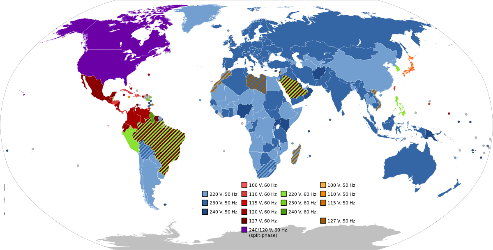

WHY DO WE HAVE DIFFERENT POWER OUTLET?
Imagine you're at an airport or in a hotel room in a foreign country, desperately needing to charge your phone, camera, or game system. However, you're confronted with a peculiar-looking outlet with round holes. To make matters more confusing, there are two or three of them. What's happening here? Why doesn't this country use the familiar plugs you have back home? In a world that is increasingly interconnected, one might assume that standardization would be the norm, especially when it comes to everyday conveniences like electrical power outlets. However, the reality is quite the opposite, with countries employing various types of power outlets and voltages. This diversity can be perplexing for travelers and even raise the question: why don't all countries adopt a universal standard for power outlets and voltages?
Historical Perspectives:
The origins of diverse power standards can be traced back to the early development of electrical systems. In the late 19th and early 20th centuries, each country was at a different stage of industrialization and electrification. As a result, various electrical systems emerged independently, leading to the adoption of different voltages and plug configurations. For instance, the United States embraced electrification earlier than some European countries. As a result, the U.S. standardized its electrical system around 120 volts, while Europe settled on 220-240 volts. The divergence in timing and development stages led to the adoption of different voltages and plug configurations.
National Preferences and Standards:
Over time, nations developed their own standards based on factors such as the availability of resources, economic considerations, and the influence of specific technologies and manufacturers. Some countries standardized their electrical systems based on decisions made by industry leaders, while others aligned with the systems of their colonial or trading partners. Japan is a prime example of a nation that developed its own electrical standards based on unique factors. Japan adopted a dual-voltage system (100V and 200V) to accommodate various appliances and devices. This preference for a distinct system was influenced by Japan's specific technological landscape and the need for compatibility with both domestic and international electronics.
Safety and Regulation:
Safety considerations also played a role in the divergence of power outlet standards. Different regions prioritized various safety measures, leading to the adoption of unique plug designs and voltage specifications. Local regulations and standards bodies further entrenched these variations, making it difficult for countries to transition to a single, global standard. The United Kingdom's Type G power outlets, with their rectangular prongs and incorporated safety shutters, showcase how safety considerations shaped electrical standards. The design prioritizes safety by minimizing the risk of accidental shocks, reflecting the influence of safety concerns in the development of power outlet configurations.
Economic Considerations:
For many nations, the cost of transitioning to a new power standard is a significant barrier. Replacing infrastructure and updating millions of outlets in homes, businesses, and public spaces is a massive undertaking. The economic investment required often outweighs the perceived benefits, especially for countries with established systems that meet their domestic needs. Brazil provides an insightful example of economic considerations influencing power outlet standards. Brazil historically adopted its own electrical standards to align with its industrial and economic needs. Transitioning to a new power standard would require a massive investment in infrastructure, impacting homes, businesses, and public spaces. The economic challenges associated with such a transition have deterred Brazil and many other nations from pursuing a universal standard.
International Cooperation and Attempts at Standardization:
Several international organizations, such as the International Electrotechnical Commission (IEC), have attempted to encourage standardization. However, the process is slow, as consensus must be reached among a diverse group of nations with different interests, priorities, and existing infrastructure. The European Union's adoption of the Europlug (Type C) exemplifies international cooperation in standardization. The Europlug's compact design and compatibility with various devices showcase the success of collaborative efforts. While the EU has made significant strides in harmonizing electrical standards, global standardization remains challenging due to the diverse interests, priorities, and existing infrastructures of nations worldwide.
Conclusion:
The diverse landscape of power outlets and voltages around the world reflects the historical, economic, and safety considerations of individual nations. While efforts to standardize have been made, the complexities of this undertaking, coupled with the significant investments required, make it a slow and challenging process. As technology advances and the world becomes more interconnected, the push for global standardization may intensify, but for now, understanding and adapting to the diverse power systems remains a part of the global traveler's experience.

A world map highlighting regions with different power outlet standards and voltages. This visual representation can emphasize the global diversity and complexity of electrical systems.